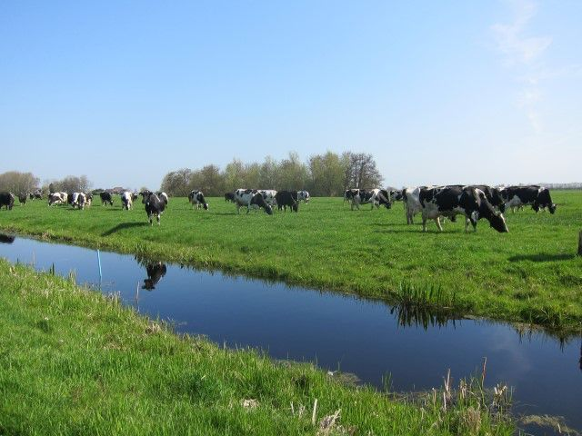

GRASLAND OP VEEN
Vroeger werd op grond van eeuwenlange ervaring veen met toemaak (mest, slootbagger, stadsafval) bemest. Die toemaak is er niet meer. Het doel van toemaak, verteerbaar voedsel voor het bodemleven, is nog steeds actueel. Op verschillende manieren worden nieuwe oplossingen gevonden.
Inleiding
Veengronden komen voornamelijk voor in Noord- en Zuid-Holland, Friesland en Drenthe. De oppervlakte was vroeger aanzienlijk groter, maar vanwege erosie door zee en rivier, en door afgraven is veel veen verdwenen.Er zijn meerdere soorten veen:
Veenmosveen
Dit veen ontstaat buiten de invloed van zee, rivier en grondwater om en alleen regen is de waterbron. Veenmos en een aantal andere planten vormen het veen.
Zeggeveen.
Het water is hier wat rijker door invloed van grondwater of water uit zee en rivier. Zeggen vormen de belangrijkste bron van het veen
Bosveen
Wanneer zee of rivier klei aanvoeren, worden de omstandigheden gunstig voor de groei van bomen. Het zijn voornamelijk elzen en wilgen, maar ook andere bomen komen voor. Naast de bovengenoemde veensoorten is er ook rietveen dat wordt gevormd onder brakke omstandigheden bij de kust.
Overzicht veengronden in Nederland. Veengronden zijn bruin aangegeven.
Overzicht veensoorten. Vooral veenmosveen is voor een groot deel verdwenen Na de veenvorming is veen bruin van kleur, niet gerijpt (makkelijk door de vingers te knijpen) en de oorspronkelijke plantenresten zijn nog goed te herkennen. Komt het veen in contact met lucht omdat het bijvoorbeeld wordt ontwaterd en voor landbouw in gebruik genomen, dan vinden de volgende processen plaats:
1. Verwering
Door luchttoetreding oxideren de makkelijk oxideerbare organische verbindingen en wordt het materiaal zwart. Verwering is een onomkeerbaar proces. Verwering kan snel optreden bij luchttoetreding. Komt bruin veen in contact met de lucht, dan wordt de buitenkant binnen enkele minuten zwart.
2. Rijping
Na de veenvorming bevat veen veel water. Bij indroging verdwijnt water en komen de bodemdeeltjes dichter op elkaar te liggen. Bij volledige rijping is veen niet meer tussen de vingers door te knijpen. Rijping is onomkeerbaar.
Ongerijpt veen kan gemakkelijk door de vingers worden geknepen (foto). Gerijpt veen in het geheel niet
3. Veraarding
Bij voldoende lucht in de bodem kan het bodemleven zich ontwikkelen en worden de plant- en dierresten verteerd. Wanneer niet meer zichtbaar is welke planten aan veenvorming bijdroegen, is het materiaal veraard. De dikte van de veraarde laag bepaalt mede de bodemkwaliteit van een veengrond. Tijdens het veraardingsproces gaat wel een deel van het materiaal verloren en komt de oppervlakte lager te liggen
### *Het bodemprofiel
Globaal zijn bij veengronden drie lagen te onderscheiden. In onderstaande afbeelding zijn ze als afzonderlijke kluiten neergelegd
Opbouw bodemprofiel veengrond.
boven: niet verweerd, niet gerijpt, niet veraard,
midden: deels verweerd, deels gerijpt, deels veraard,
onder: verweerd, gerijpt, veraard. Drie voorbeelden van een niet verweerde, niet gerijpte, niet veraarde diepere laag:
Ondergrond 75-85 cm diepte Kwadijk Noord-Holland
Ondergrond 80-90 cm diepte veengrond Zegveld Utrecht
-1920w.jpg)
Ondergrond 80-90 cm diepte veengrond Stolwijk Zuid-Holland Voorbeeld van een deels verweerde, deels gerijpte, deels veraarde diepere laag
Veen op 35 tot 45 cm diepte.
Tussen de veraarde bovenlaag en de ongerijpte ondergrond bevindt zich een laag die in de winter volledig verzadigd is met water, maar in de zomer deels uitdroogt. In deze laag kunnen in de zomer scheuren optreden, vooral wanneer de grond wat klei bevat. In deze scheuren kan in de zomer ook wat grond uit hogere lagen vallen en wanneer in de winter de grond weer gaat zwellen is er eigenlijk niet voldoende ruimte over en ontstaan glimmende vlakken van samengeperste grond. In het midden van de foto is zo’n glimmend vlak te zien. Ook is te zien dat wortels in de zomer van de scheur gebruik hebben gemaakt om in diepere lagen te komen. Voorbeeld van een deels verweerde, deels gerijpte, deels veraarde diepere laag
Bovenlaag veengrond onder Purmerend met een goede doorworteling tot ruim 20 cm diepte
Bovenlaag veengrond onder Purmerend met een slechte doorworteling dieper dan 5 cm Bovenstaande twee kluiten van verweerde, gerijpte en veraarde grond onder gras laten zien dat er grote verschillen in doorworteling voor kunnen komen. De oorzaak van dergelijke verschillen is veelzijdig. Berijden onder te natte omstandigheden is de belangrijkste, maar maïsteelt of teveel vee op een moment dat dat nog niet kan is soms ook de oorzaak. Het achterwege laten van mest die het bodemleven voedt speelt ook een rol. Vaak is het een samengaan van meerdere ongunstige maatregelen die elkaar versterken.
Kuil in een veengrond onder Purmerend. In de grond zijn verschillende lagen te herkennen:
De licht gekleurde bovenlaag is de veraarde laag. Hierin zijn resten van zand te herkennen dat is aangebracht om de draagkracht te vergroten.
Hieronder een zwarte deels veraarde laag met geringe bewortelingsmogelijkheden. Onder deze zwarte laag ligt de bruine ongerijpte veenlaag. Daar weer onder ongerijpte klei die voor de veenvorming is afgezet.
Indrogend veen
Indrogend veen wordt overal in West-Nederland aangetroffen, maar ook elders: randen van veenkoloniën en in het buitenland de Po-vlakte in Italië en in Indonesië op Java en Sumatra. Het probleem is dat na indrogen het veen moeilijk weer water opneemt. In april bijvoorbeeld kan de grond kurkdroog zijn. De grond is korrelig en het contact tussen wortel en bodem verdwijnt. Er kan bovenin wortelvilt ontstaan. Het verschijnsel treedt vooral op bij een pH-KCl van 3,3 – 4,5 en een Fe-gehalte van meer dan 4%. Het verschijnsel wordt niet veroorzaakt door krimp van humus of dicht opeen zitten van deeltjes, maar wel door colloïdale humus die een soort watervaste lijm vormt. De oplossing voor dit probleem in het verleden was het gebruik van toemaak (een mengsel van bagger en stalmest) die het bodemleven stimuleert en verhoging van de pH-waarde door gebruik van kalk. Belangrijk is ook dat het grondwater niet te laag staat in de zomer.
-1920w.JPG)
Alleen de door het bodemleven veraarde bovenlaag wordt vochtig bij regen. Zelfs bij regen gedurende een hele winter blijft de laag onder de vochtige bovenlaag droog.
Knippigheid
Knippigheid komt voor op plaatsen waar vroeger klei werd afgezet in een rietmoeras met brak water. Het komt in het hele veengebied van West-Nederland voor, zelfs tot in de buurt van Utrecht. Door knippigheid kan de bodemstructuur zeer slecht zijn door een overmaat aan geadsorbeerde natrium en magnesium aan de klei. Om de structuur te verbeteren werd vroeger toemaak (een mengsel van bagger en stalmest) toegepast. Nu dat niet mogelijk is kan kalk de bodemstructuur wat verbeteren. Verder is stimulering van het bodemleven van belang.
Maatregelen
De eigenschappen van de bodems in het veengebied verschillen sterk van die van zand en klei. Het hoge organischestofgehalte en de waterhuishouding zijn geheel anders. Verder moet voorkomen worden dat het materiaal verdwijnt door oxidatie. Een aantal maatregelen die hier specifiek betrekking op hebben worden in het volgende besproken.
Toemaak
In de Nederlandse landbouw krijgt de organischestofvoorziening veel aandacht. De bodemkwaliteit wordt er sterk door bepaald en aan maatschappelijke eisen rond milieu en klimaat kan beter worden voldaan door een goed organischestofbeheer. Er wordt daarom veel waarde aan het organischestofgehalte gehecht. Interessant is dat het evenwel niet om het gehalte alleen gaat, maar ook om de organischestofkwaliteit. Organische stof is in veengronden ruim voorhanden. Toch wordt er sinds het begin van de ontginning bemest met organischestofrijke mest. Deze stimuleert het bodemleven en dat is essentieel voor een goede bodem. Het centrale product was gedurende vele eeuwen de toemaak. Toemaak is een mengsel van slootbagger en stalmest. Stadsafval werd hier ook vaak aan toegevoegd. Toemaak was van belang voor de verzorging van het bodemleven, de basis voor de veraarding, en bevatte ook voedingsstoffen. Drie verschijnselen benadrukken het belang van toemaak in het verleden:
- Er zijn veensoorten met geheel verschillende eigenschappen. Onderzoek door Pons wees uit dat de veensoort toch geen grote invloed op de bodemeigenschappen had in het midden van de 19e eeuw. Pons schreef dat toe aan de dominerende rol van toemaak op de bodemeigenschappen.
- Toemaak werd vaak verkocht aan tuinders in het Westland en aan bollentelers. In de Tweede Wereldoorlog was er voor het vee geen voergraan beschikbaar. De bedrijven die in het verleden geen toemaak hadden verkocht bleken veel minder last te hebben van de gewijzigde omstandigheden.
- Toemaak wordt al langer niet meer gebruikt. Recent onderzoek toont aan dat de veensoort (koolstofpercentage van de organische stof) toch wel invloed op de bodemeigenschappen heeft (van Eekeren, 2012). Mogelijk geeft dit aan dat het huidige drijfmestgebruik toemaak toch niet in voldoende mate kan vervangen. Nieuwe meststoffen moeten mogelijk ontwikkeld worden om een optimale bodemkwaliteit te verkrijgen.
Toemaakbereiding. De bagger werd bij de slootrand gelegd om op te drogen en door te vriezen. Hierdoor kon beter een goede toemaak bereid worden door menging met stalmest en stadsafval
Herinnering aan de voormalige baggerwinning voor de toemaakbereiding
Resten van stadsafval door gebruik van toemaak in een veengrond onder Amsterdam
Jan Duindam in Delfgauw bij Delft mengt slootbagger met potstalmest en maakt zo een eigentijdse toemaak
Een andere manier van toemaakbereiding nieuwe stijl is een potstal met GFT-compost waar de koeien de uitwerpselen bij voegen. Hier bij Marinus de Vries in Stolwijk.
Geen maïs
Maïs is in de melkveehouderij gewild als aanvulling op gras bij het voer. De maïsteelt betekent evenwel een versterkte afbraak van de organische stof. Verder heeft de inzaai, maar vooral de oogst met zware machines bij natte omstandigheden, een negatieve invloed op de bodemstructuur. Teelt van maïs moet zoveel mogelijk beperkt worden.
Perceel bij Nieuwerbrug na de maïsoogst. Een dergelijke aanslag op de bodemstructuur is vele jaren later nog merkbaar
Berijden en betreden
Juist op veen is het van belang om onder natte omstandigheden gebruik van zware machines en beweiden met veel koeien op een kleinere oppervlakte zoveel mogelijk te voorkomen. Kies bij beweiden de percelen uit die dat het beste kunnen verdragen. Let bij mechanisatie op de juiste banden en de juiste bandenspanning.
Veen en klimaat
Bij de afbraak van veen komt veel koolzuur in de lucht. De Nederlandse veengronden produceren jaarlijks evenveel koolzuur als de uitlaten van 2 miljoen auto’s. Het gaat om 4 miljoen ton koolzuur. Dat is 5% van de totale Nederlandse uitstoot. Deze uitstoot is misschien te beperken met onderwaterdrainage. Je legt de drains wat dieper dan normaal. Via de drains kan water in de zomer zo ook middenin het perceel aangevoerd worden. Het veen blijft in de zomer dan natter. Bacteriën kunnen zo minder goed het veen afbreken. De 4 miljoen ton koolzuur zou zo teruggebracht kunnen worden tot 3 miljoen ton. Het onderzoek naar onderwaterdrainage vindt in Nederland door de WUR in Zegveld plaats en door de Radboud Universiteit in Friesland. De resultaten geven aanleiding tot veel discussie en of de beoogde 25% van de uitstoot gehaald kan worden is nog niet zeker. Er wordt ook onderzoek gedaan naar onder druk water de drains inspuiten.

Perceel met onderwaterdrains bij Zegveld.
Graslandbeheer en weidevogels
WUR en Louis Bolk Instituut doen in 2018 onderzoek naar stimulering van weidevogels op veengrondUit de website amazinggrazing.nl :
Het project Amazing Grazing werkt samen met de projecten “Winst en Weidevogels’’ in Zuid-Holland en ‘’Vogels en Voorspoed’’ in Friesland van het Louis Bolk Instituut. In beweidingsproeven op KTC Zegveld, Dairy Campus en praktijkbedrijven is wordt onderzoek gedaan.
Voedselvoorraad
De beschikbaarheid van insecten in de kuikenperiode is namelijk zeer belangrijk voor de kuikenoverleving van weidevogels. Insecten worden geteld in verschillende beweidingssystemen en maaipercelen. In het voorjaar zijn regenwormen geteld.
Rust en dekking
Ook wordt gekeken naar het effect van verschillende beweidingssystemen op rust- en dekkingsmogelijkheden. Grazend vee mijdt bijvoorbeeld het gras rond mestflatten in het veld. Het gevolg hiervan is dat een substantieel deel van de beweide oppervlakte niet wordt benut voor productie. Tegelijkertijd bieden deze zogenaamde mestbossen een goede schuilplek voor weidevogels en hun kuikens en dragen ze bij aan de biodiversiteit van de weide.
Mozaïekbeheer
Bij mozaïekbeheer speelt beweiding een belangrijke rol. In dit beheer maait de grondgebruiker zijn areaal niet in één keer. Hij laat plekken met gras staan, zodat er ook in mei en juni nog grote stukken met lang gras in het perceel zijn, dat bescherming biedt aan kuikens. Door bijvoorbeeld voor te weiden kan de ondernemer maaitrappen creëren, waardoor hij ook bij uitgestelde maaidatums nog kwalitatief goed gras kan oogsten. Binnen de beweidingsproef op KTC Zegveld en op een praktijkbedrijf in Friesland zijn verschillende veldjes aangelegd waarin het effect van verschillende voorbeweidings- en maaistrategiën op grasopbrengst en kwaliteit worden vergeleken. De eerste resultaten worden in het najaar van 2018 verwacht.
Literatuur
Eekeren, N. van, Deru, J., Lenssinck, F., Bloem, J Bodemkwaliteit op veengrond, Effecten van drie maatregelen op een rij 2016, Louis Bolk instituut